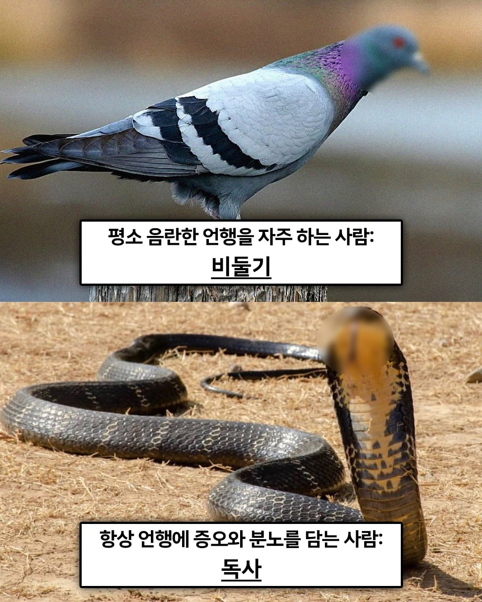
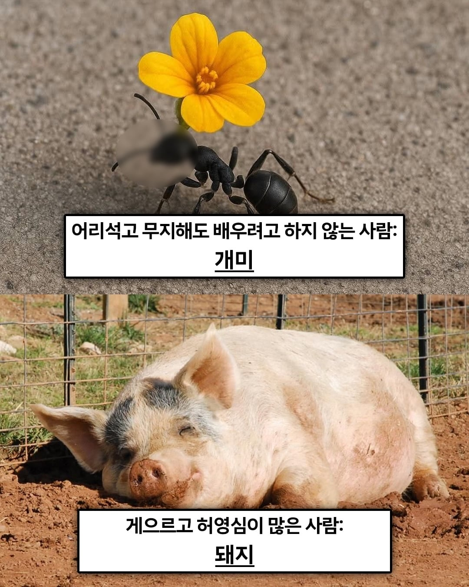
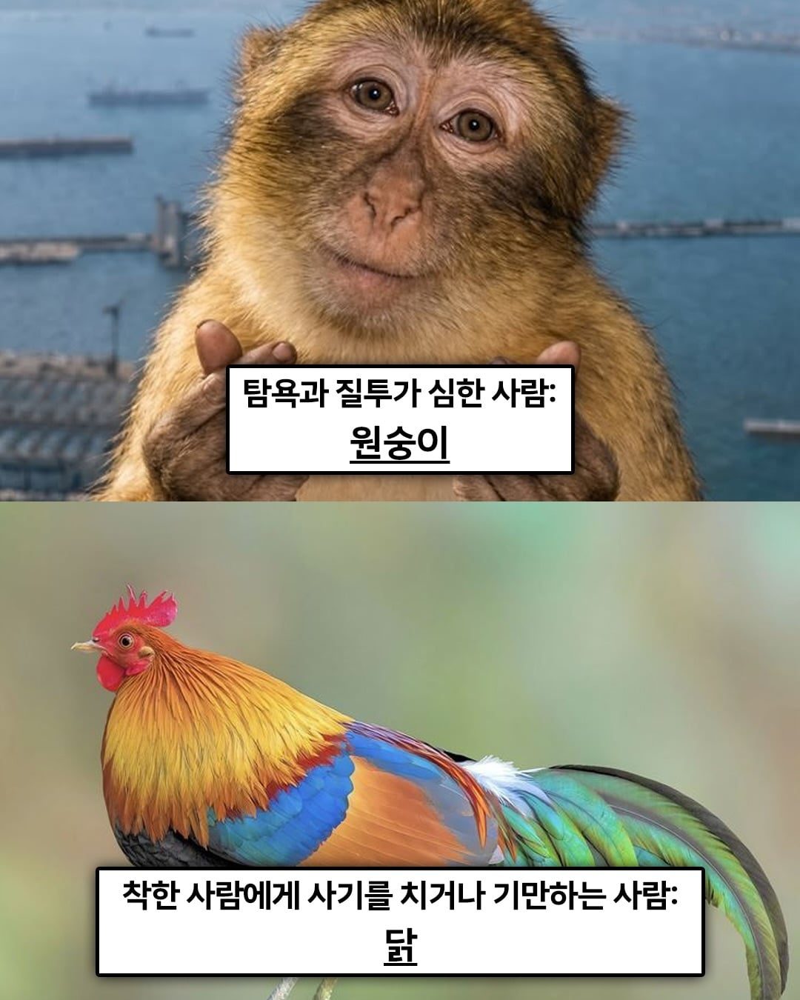
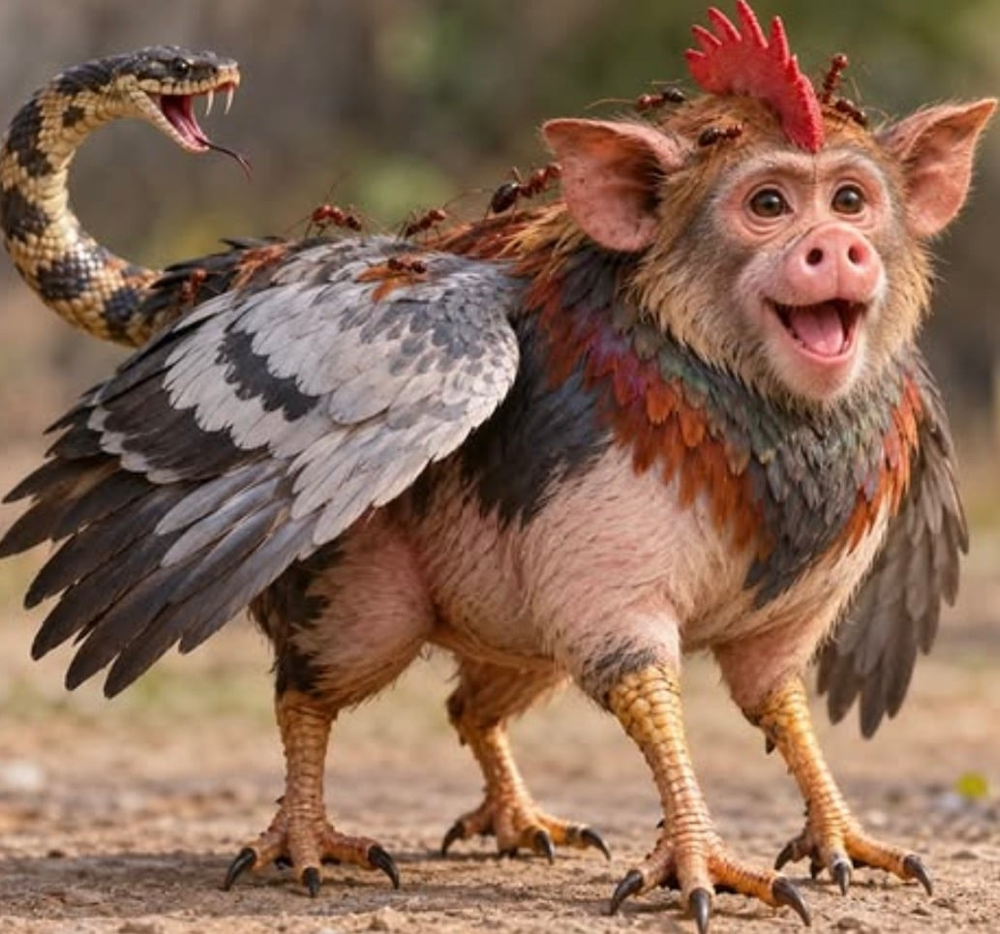

예상되는 나의 다음생




예상되는 나의 다음생

탐진치 그자체 ㄷㄷ
탐켄치?
ㅋㅋㅋㅋㅋㅋㅋㅋㅋㅋㅋㅋㅋ
에드워드 오빠
사기까지 치고 다닌거야?
우우 쓰레기 자식
나는 돼둘기로 태어나겠구나
돼지 너무 행복해보여
아 야스!야스!야스!
난 다음생에 맛있는 베이컨이 되어서 인간들에게 봉사할께 .... ㅋㅋㅋ
이세계 전생 키메라, 폴리모프와 ts를 겸한
돼지랑 개미정도로 태어날 것 같은데 돼지랑 개미를 합쳐서 개미중에 뚱뚱한 종류로 태어나게 되는 거임 아니면 돼지 한 번 개미 한 번임?
둘을 합쳐서 개돼지가 됩니다
개팔자가 상팔자
키메라추
코끼리땃쥐로 태어나려면 어떻게 해야함?
동물원드립넷
뚱뚱한 비둘기 당첨!
닭다리가 4개 씩이나 개쩐다
히오스 빛나래 원숭이스킨
모자이크 왜 함? 어차피 융합체에서 다 보이는데
동물원.net
키메라 드립넷
키메라 드립넷
비둘기가 너무많아
어릴적 보던 "세상에서 제일 이상한 동물이야기" 책 보는거 같네
난 개미로 태어나겠네
구구구국구구구 ㅠㅠ
멋있는데?
키메라 드립넷
위의 셋은 초상권 지켜줬으니 착한 개붕이구나
와 키메라